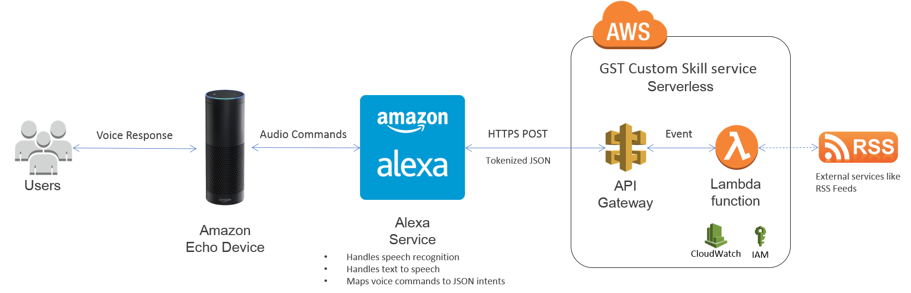

Alexa GST Skill¶
Introduction¶
GST is Goods and Services Tax in India.
This project creates a microservice deployed on AWS API Gateway and Lambda and provides the API Gateway HTTPS Url in Alexa Developer portal.
Alexa uses this microservice to provide answers related to GST like what is gst? or what is the GST rate of Milk? etc.
Architecture¶
Tools and Technologies¶
- Python 2.7
- Flask-Ask: Flask-Ask is a Flask extension that makes building Alexa skills for the Amazon Echo.
- cookiecutter-flask-ask: ready-to-roll Alexa Skill skeleton based on Flask-Ask
- Zappa: Serverless framework for Lambda and API Gateway using python
- Tox: virtualenv management and test command line tool using pytest
- Sphinx: Documentation generator
- AWSCli: AWS command line tool
Security¶
For better AWS security use custom AWS VPC and Security Group, add below configuration in your zappa_settings.json file
"vpc_config": { // Optional Virtual Private Cloud (VPC) configuration for Lambda function
"SubnetIds": [ "subnet-12345678" ], // Note: not all availability zones support Lambda!
"SecurityGroupIds": [ "sg-12345678" ]
},
Setup¶
It is recommended to run this project in a virtualenv. If virtualenvs are unfamiliar to you, this handy tutorial might be a good place to start.
Create Virtual Environment
- Install virtualenv:
$ pip install virtualenv - Create virtual environment names env:
$ virtualenv env - Activate env on Unix:
$ source venv/bin/activate - Activate env on Windows:
$ env\Scripts\activate - Install the required Python packages from root project folder:
$ pip install -r requirements.txt --no-cache-dir
AWS Deployment
Create AWS User
- Create an IAM user named
Zappa-Deployin the AWS console - Give
AdministratorAccesspolicy for this user - Once the user is created, its Access key ID and Secret access key are displayed, keep it safe
Configure IAM credentials locally
- Make sure you are in project root folder and virtual env is active
- Configure AWS:
$ aws configure - Follow the prompts to input your
Access key IDandSecret access key. - For Default region name, type:
us-east-1. - For Default output format:
json.
This will install credentials and configuration in an .aws directory inside your home directory
Deploy the skill with Zappa
zappa_settings.jsonfile has all required configuration to deploy dev to AWS- Very first time execute:
$ zappa deploy dev - Releasing code updates doesn’t recreate the API gateways and is a faster. Such updates are handled through a separate command:
$ zappa update dev - API Gateway url will be displayed on cosole something like:
https://abcdefgh.execute-api.us-east-1.amazonaws.com/dev
Configure the skill in the Alexa developer console and test
- Working with the Alexa console requires Alexa Developer console access
- Go to Alexa Skills list page
- Click the Add a New Skill button
- The skill configuration screen opens
Skill Information section
- Set the Name of the skill to
gstand use an Invocation Name of repogst
Interaction Model section
- Paste in the Intent Schema
- Create Custom Slot type
- Paste in the Sample Utterances
Configuration section
- Select HTTPS as the Service Endpoint Type
- Paste API Gateway url
SSL Certificate section
- Select the option that reads:
My development endpoint is a sub-domain of a domain that has a wildcard certificate from a certificate authority
Test Section
Now test the skill by typing: What is GST
Also, you can check This video by John Wheeler which shows how to deploy your speech assets configuration to the Alexa Developer Portal.
That’s all! If you are using a browser that supports WebRTC for micophone input (Chrome, Firefox or Opera), you may use echosim to test your script - simply log in with the same credentials you used to deploy your Skill.
Testing and Code Coverage¶
To run tests and check code coverage, execute below command in root project directory
$ tox
This will create python 2.7 virtual environment and execute the tests
To clean run the tests execute $ tox --recreate
Zappa Commands¶
- Logs -
$ zappa tail dev - Limit the output returned and eliminate the HTTP noise in the logs by using the –since 1m and –non-httpcommand options:
$ zappa tail dev --since 1m --non-http - Remove the AWS Lambda function, API gateway:
$ zappa undeploy dev
Sphinx Commands¶
- Go to <root_folder>/docs and execute below commands to create HTML documents
- Unix:
$ make html - Windows:
make.bat html